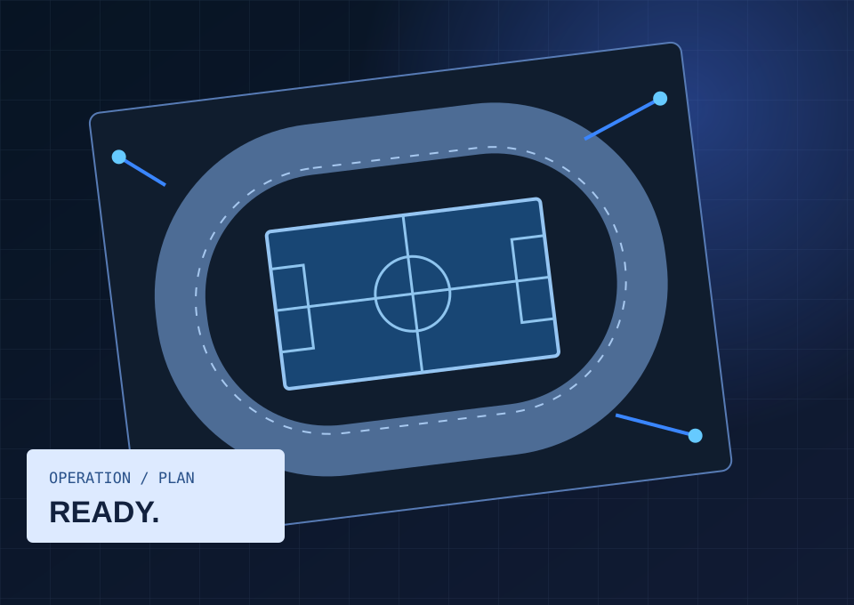

Technologia.
Kreacja.
Realizacja.
Bezpieczeństwo i organizacja wydarzeń, media oraz zarządzanie projektami — ze wsparciem IT i rozwiązań WWW. Pięć kompetencji. Jeden uporządkowany proces.
Myślę technicznie. Działam praktycznie. Łączę doświadczenie administratorskie, pracę w terenie i komunikację wizualną z organizacją projektów i wydarzeń. Nie musisz szukać osobnego wykonawcy do każdego zadania.
Poznaj moje doświadczenie ↗Pięć obszarów.
Jeden standard.
Wybierz obszar, w którym potrzebujesz wsparcia. Każda usługa może być realizowana osobno lub jako część większego projektu.
Nie tylko
na papierze.
Doświadczenie w organizacji wydarzeń i pracy klubowej, komunikacji oraz technologii. Poniższe grafiki są tymczasowymi ilustracjami, nie zdjęciami realizacji.

Bezpieczeństwo. Organizacja.
Odpowiedzialność.
Przygotowanie meczów, dokumentacja, koordynacja działań i audyty organizacyjne.

Sport. Obraz.
Komunikacja.
Fotografia, materiały wizualne i komunikacja — obszar studia KACPY.

Projekty. Budżety.
Procesy.
Doświadczenie w zarządzaniu sekcją Amp Futbolu, zadaniami, zespołami i budżetem.
Sport znam
od środka.
Kluby i organizatorzy wydarzeń potrzebują czegoś więcej niż pojedynczego wykonawcy. Łączę wiedzę o klubowych realiach z IT, mediami i organizacją meczu.
Zobacz ofertę dla sportuNie tylko realizuję.
Porządkuję.
Od analizy obecnych procesów po wdrożenie prostego systemu pracy. Pomagam firmom i klubom uporządkować zadania, odpowiedzialności, harmonogramy i budżety — bez dokładania narzędzi, których nikt nie będzie używał.
Zobacz wsparcie projektowe ↗Mały budżet.
Dobry plan.
Pomoc przy dokumentacji, projektach, organizacji, komunikacji i technologiach — w rozsądnym zakresie, który nie wymaga zatrudniania całego działu.
Poznaj ofertę dla małych klubówPraktyka poparta
kompetencjami.
* KPOF — status do potwierdzenia przed publikacją strony.
W projekcie celowo nie używam fikcyjnej fotografii właściciela.
Jeden kontakt.
Wiele możliwości.
Od lat pracuję przy sieciach i systemach IT, a równolegle prowadziłem projekty, zespoły i budżety w sporcie oraz tworzyłem materiały medialne. Łączę realizację z porządkowaniem procesów — tak, żeby rozwiązania działały również po zakończeniu projektu.

Porozmawiajmy
o Twoim projekcie.
Nie musisz wiedzieć, jakiego rozwiązania potrzebujesz. Zacznijmy od rozmowy i określenia zakresu.
Napisz do mnie